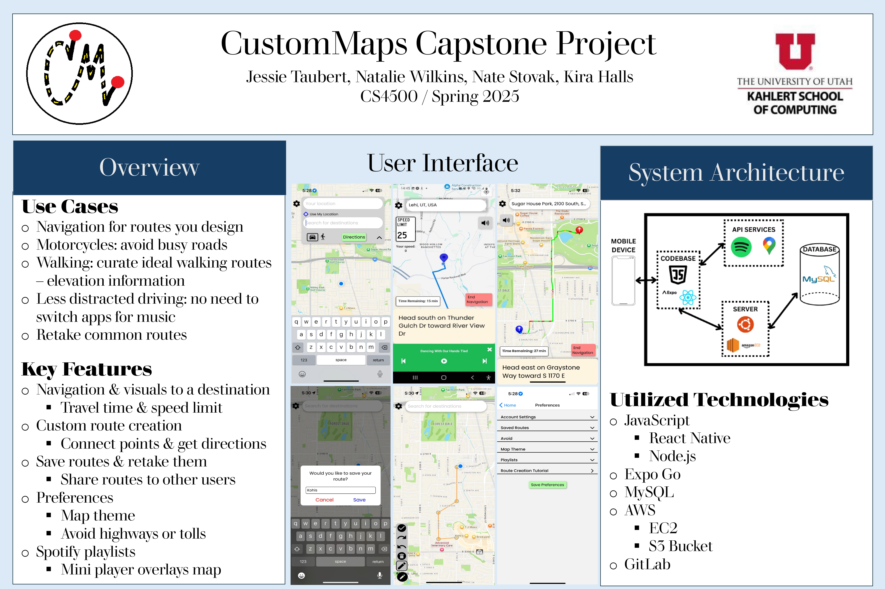
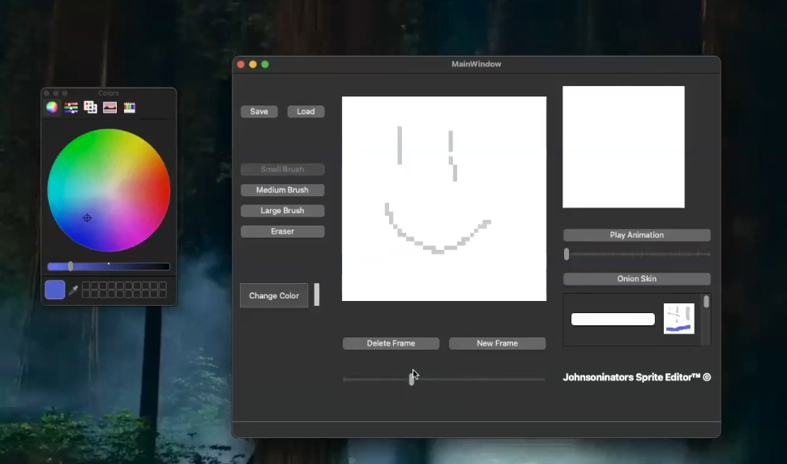

Languages:
C C++ (and Qt) C# Java SQL (Postgre & Oracle) NoSQL (MongoDB) Python JavaScript (with d3, React Native, Node.js) HTML CSS R Verilog MATLAB Dart
Tools:
Docker AWS GitHub & GitLab CI/CD Pipelines (GitLab)
I consider myself to have a strong foundation in collaborative problem solving and communication from my work experience and education.
I enjoy computer science for the logic aspects and challenge of creating unique, efficient solutions to seemingly simple problems! I also love how there is always something to new learn.
While exploring the computer science field, I have found myself diving into the niches of data science and machine learning, as well as electrical and computer engineering.
University of Utah: Algorithms, Computer Systems, Computer Organization, Visualization for Data Science, Foundations of Data Analysis, Human-Centered Data Management, Intro to Machine Learning, Probability & Statistics, Data Structures & Algorithms, Models of Computation, Linear Algebra, Discrete Structures, Vector Calculus, Software Practice I & II
Worcester Polytechnic Institute: Database Systems, Digital Circuit Design, Intro to ECE, Calculus I–IV
Lady Margaret Hall, Oxford: Artificial Intelligence & Machine Learning: Theory & Practice
I have mainly used python for machine learning and data analysis, using PyTorch, NumPy, and Pandas libraries.
This project aims to predict climbing grades based on certain metrics! I dived into more technical machine learning models, testing out regression and classification, but I found regression to better model the data. I collected all of the data via a google form since there is not much publicly accessible climbing data out there, and this resulted in a fairly small dataset. Ultimately, the biggest challenge I faced was avoiding overfitting the models - leading me to scrapping a custom neural network and the classification models. However, I found the regression models to be accurate (~87-91%) and explain the variance of the data strongly! I also learned new technologies like Flask and AWS in order to deploy the web page. It was a great experience to apply the knowledge I've learned in my classes and combine it with a sport I am passionate about!
These projects explored mobile app development and full-stack development.
CustomMaps is an innovative mobile application designed to give drivers full control over their routes while still benefiting from the essential features of modern navigation apps. Unlike existing map apps that suggest the quickest or most efficient route, CustomMaps empowers users to customize their paths, whether they want to avoid specific roads, add stops, or simply prefer a particular route due to familiarity. Our app eliminates the hassle of "tricking" navigation apps by dropping pins or adjusting settings to fit a preferred route.

These projects focused heavily on object-oriented programming, GUI development, game logic, and systems-level problem solving using C++ and the Qt framework.
Collaborated on a color mixing game with three levels, error tolerance via euclidean distance in color space, API color naming, and Box2D for interactivity.
Sprite editor built with Qt supporting brush colors/sizes, animation preview, onion-skin, JSON save/load.

Recreated the classic Simon memory game using Qt signals/slots and timers.
Wavy text generation using Haru library to manipulate rendered text paths and transformations.
These projects explored networking, GUI design, serialization, and application architecture using C# and the .NET framework.
Recreated Agar.io with server handling, JSON serialization, and mini-map feature.
Client/server messaging using TCP networking with GUI.
Designed a mock spreadsheet application with a user interface, supporting imports from files in XML and basic mathematical functions as well as cell relations.
These projects focused heavily on interactivity, responsive web design, and data visualization using HTML, CSS, and JavaScript libraries such as D3.js.
Created a web page to display charts and interactive data visualizations using D3.js for the air quality index in Utah counties over time.
Created an interactive dashboard using D3.js to visualize COVID cases and deaths across four regions with linked visualizations and dropdown filtering.
Developed an interactive map and linked line chart to visualize COVID case trends by country. Selecting countries on the map dynamically updated the chart, while continents were shown by default.
These projects focused on object-oriented programming, data structures, algorithms, and database connectivity using Java.
Built relational tables with triggers in Oracle SQL and queried them through a Java connection.
Created a generative context-free grammar program through a file input with given rules.
Recreated most data structures and ADTS including a binary max heap, hash table, binary search tree, graph, linked list, and priority queue. Implemented merge sort and quick sort as well as basic graph algorithms: breadth-first search, depth-first search, and topological sort. This allowed me to build a strong foundation in these fundamental algorithms and data structures.
These projects explored hardware description languages, digital logic, and FPGA-based system design.
Used the Basys 3 Board to simulate a metronome, using the buttons to change the time and lights to flash to the time.
After closely collaborating with my peers during junior year, the 50 of us enrolled full-time in classes at Worcester Polytechnic Institute for our senior year.
Developed optimization strategies for homeowner battery storage systems during a 36-hour mathematical modeling competition.